f = "sentinel/S2A_MSIL1C_20180220T105051_N0206_R051_T32ULE_20180221T134037.zip"
granule = system.file(file = f, package = "starsdata")
file.size(granule)
# [1] 769462647
base_name = strsplit(basename(granule), ".zip")[[1]]
s2 = paste0("SENTINEL2_L1C:/vsizip/", granule, "/", base_name,
".SAFE/MTD_MSIL1C.xml:10m:EPSG_32632")
library(stars)
# Loading required package: abind
# Loading required package: sf
# Linking to GEOS 3.14.1, GDAL 3.12.2, PROJ 9.7.1; sf_use_s2() is
# TRUE
(p = read_stars(s2, proxy = TRUE))
# stars_proxy object with 1 attribute in 1 file(s):
# $EPSG_32632
# [1] "[...]/MTD_MSIL1C.xml:10m:EPSG_32632"
#
# dimension(s):
# from to offset delta refsys values x/y
# x 1 10980 3e+05 10 WGS 84 / UTM z... NULL [x]
# y 1 10980 6e+06 -10 WGS 84 / UTM z... NULL [y]
# band 1 4 NA NA NA B4,...,B8
st_get_dimension_values(p, "band")
# [1] "B4" "B3" "B2" "B8"9 Large datasets
Exercise 9.1
For the S2 image (above), find out in which order the bands are using st_get_dimension_values(), and try to find out (e.g. by internet search) which spectral bands / colors they correspond to.
import glob, os, tempfile, time
import numpy as np
import pandas as pd
import geopandas as gpd
import shapely
import rasterio
import matplotlib.pyplot as plt
from rasterio.enums import Resampling
from rasterio.features import geometry_mask
from rasterio.windows import from_bounds
# the starsdata package must be installed in R for this file to be found
f = "sentinel/S2A_MSIL1C_20180220T105051_N0206_R051_T32ULE_20180221T134037.zip"
granule = sorted(glob.glob(os.path.expanduser(f"~/R/*/*/starsdata/{f}")))[-1]
print(round(os.path.getsize(granule)))
# 769462647
base_name = os.path.basename(granule).replace(".zip", "")
s2 = (f"SENTINEL2_L1C:/vsizip/{granule}/{base_name}"
".SAFE/MTD_MSIL1C.xml:10m:EPSG_32632")
src = rasterio.open(s2) # opens the file, does not read the pixel values
print(src.shape, src.count, src.crs)
# (10980, 10980) 4 EPSG:32632
extent = (src.bounds.left, src.bounds.right, src.bounds.bottom, src.bounds.top)
print(src.descriptions) # band order: B4 (red), B3 (green), B2 (blue), B8 (near infrared)
# ('B4, central wavelength 665 nm', 'B3, central wavelength 560 nm', 'B2, central wavelength 490 nm', 'B8, central wavelength 842 nm')Exercise 9.2
Compute NDVI for the S2 image, using st_apply and an an appropriate ndvi function. Plot the result to screen, and then write the result to a GeoTIFF. Explain the difference in runtime between plotting and writing.
def read_down(factor):
"""read the image downsampled by `factor`: every (factor+1)-th pixel"""
n = int(np.ceil(src.width / (factor + 1)))
x = src.read(out_shape=(src.count, n, n), resampling=Resampling.nearest)
tr = src.transform * src.transform.scale(src.width / n, src.height / n)
return x.astype("float64"), tr
p1, tr1 = read_down(30)
def ndvi_fn(r, g, b, nir):
return (nir - r) / (nir + r)
ndvi_down = ndvi_fn(*p1) # computed on the downsampled image only
# <string>:3: RuntimeWarning: invalid value encountered in divide
plt.imshow(ndvi_down, extent=extent)
plt.colorbar()
# <matplotlib.colorbar.Colorbar object at 0x7a0c351e2ba0>
plt.show()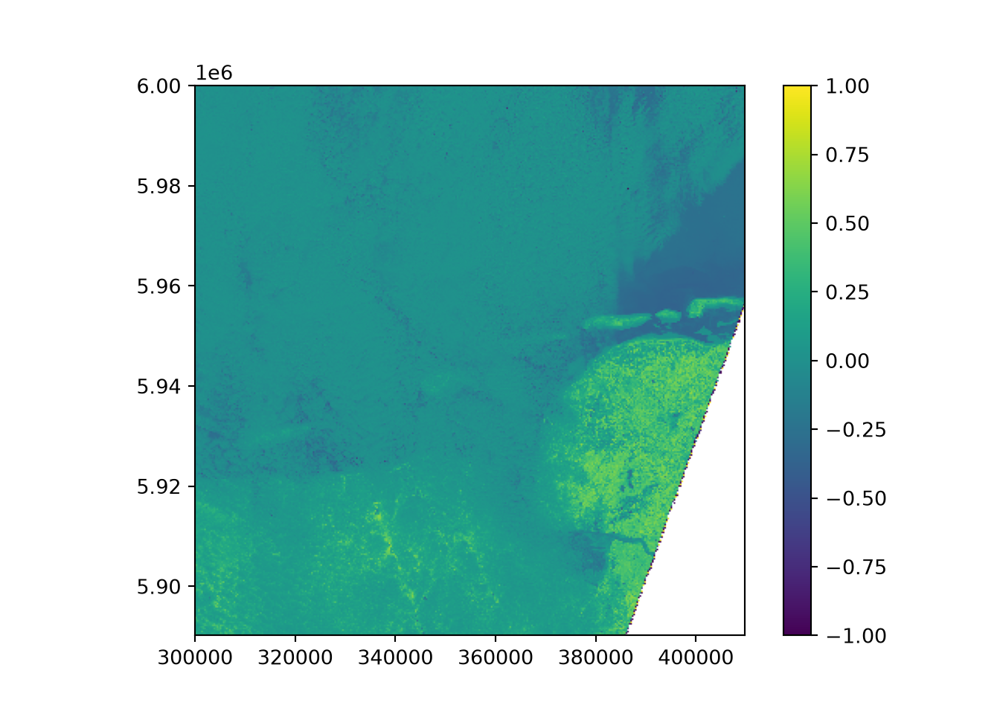
Alternatively, one could use
ndvi_slow = function(x) (x[4]-x[1])/(x[4]+x[1])def ndvi_slow(x): # x has the four band values of a single pixel
return (x[3] - x[0]) / (x[3] + x[0])
# apply it to every pixel of the (small) downsampled image: much slower
# than the vectorised function above
ndvi_s = np.apply_along_axis(ndvi_slow, 0, p1)
# <string>:2: RuntimeWarning: invalid value encountered in scalar divide
np.allclose(ndvi_s, ndvi_down, equal_nan=True)
# Truebut that is much less efficient (called for every pixel, rather than chunked).
Write to a tiff:
system.time(write_stars(ndvi, "ndvi.tif"))
# ====================================================================
# user system elapsed
# 114.889 10.111 34.225out = os.path.join(tempfile.mkdtemp(), "ndvi.tif")
profile = src.profile | dict(driver="GTiff", count=1, dtype="float32", nodata=np.nan,
compress="deflate", tiled=True, blockxsize=256, blockysize=256)
profile.pop("photometric", None)
t0 = time.time()
with rasterio.open(out, "w", **profile) as dst:
for _, w in dst.block_windows(1): # process the full image in blocks
r, nir = (src.read(i, window=w).astype("float32") for i in (1, 4))
with np.errstate(invalid="ignore", divide="ignore"):
dst.write(((nir - r) / (nir + r)).astype("float32"), 1, window=w)
print("seconds:", round(time.time() - t0, 1))
# seconds: 8.3The runtime difference is caused by the fact that plot downsamples, so computes a very small fraction of the available pixels, where write_stars computes all pixels, and then writes them, at full (original) resolution.
Exercise 9.3
Plot an RGB composite of the S2 image, using the rgb argument to plot(), and then by using st_rgb() first.
plot(p, rgb = 1:3)
# downsample set to 18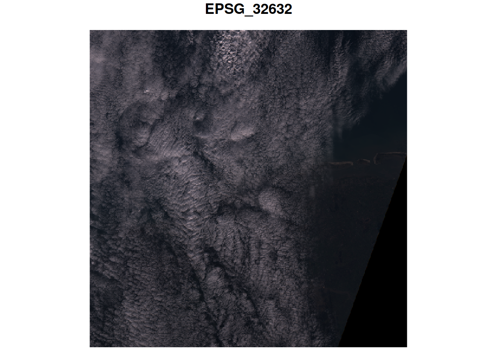
# plot(st_rgb(p[,,,1:3], maxColorValue=13600)) # FIXME: fails# red, green, blue are bands 1:3 (B4, B3, B2); stretch to the 2-98% range
rgb = np.moveaxis(p1[:3], 0, -1)
lo, hi = np.nanpercentile(rgb, [2, 98])
plt.imshow(np.clip((rgb - lo) / (hi - lo), 0, 1), extent=extent)
# <matplotlib.image.AxesImage object at 0x7a0c323a9f90>
plt.show()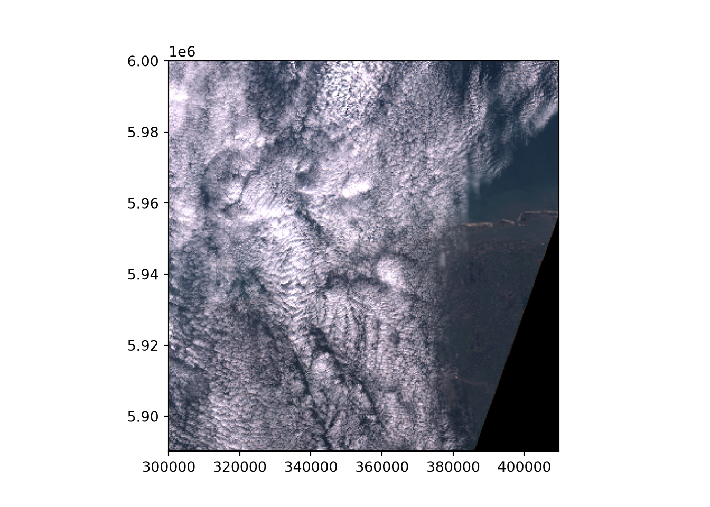
Exercise 9.4
select five random points from the bounding box of S2, and extract the band values at these points. What is the class of the object returned? Convert the object returned to an sf object.
pts = p |> st_bbox() |> st_as_sfc() |> st_sample(5)
(p5 = st_extract(p, pts))
# stars object with 2 dimensions and 1 attribute
# attribute(s):
# Min. 1st Qu. Median Mean 3rd Qu. Max.
# EPSG_32632 720 1054.75 2509.5 2436.55 3635.25 4182
# dimension(s):
# from to refsys point
# geometry 1 5 WGS 84 / UTM z... TRUE
# band 1 4 NA NA
# values
# geometry POINT (365212....,...,POINT (350102....
# band B4,...,B8
class(p5)
# [1] "stars"
st_as_sf(p5)
# Simple feature collection with 5 features and 4 fields
# Geometry type: POINT
# Dimension: XY
# Bounding box: xmin: 314181.2 ymin: 5907605 xmax: 385320.2 ymax: 5995409
# Projected CRS: WGS 84 / UTM zone 32N
# B4 B3 B2 B8 geometry
# 1 3712 3618 4182 4052 POINT (365212.3 5990310)
# 2 2514 2505 2922 2247 POINT (314181.2 5944443)
# 3 847 1071 1573 720 POINT (385320.2 5995409)
# 4 811 972 1295 1006 POINT (339114.9 5907605)
# 5 3504 3462 4031 3687 POINT (350102.5 5979640)rng = np.random.default_rng(4821)
xy = np.column_stack([rng.uniform(extent[0], extent[1], 5),
rng.uniform(extent[2], extent[3], 5)])
p5 = pd.DataFrame(list(src.sample(xy)), columns=["B4", "B3", "B2", "B8"])
p5["x"], p5["y"] = xy[:, 0], xy[:, 1]
print(type(p5)) # a pandas DataFrame
# <class 'pandas.DataFrame'>
gpd.GeoDataFrame(p5, geometry=gpd.points_from_xy(p5.x, p5.y), crs=src.crs)
# B4 B3 ... y geometry
# 0 3063 3017 ... 5.976345e+06 POINT (344625.918 5976344.903)
# 1 2303 2211 ... 5.898237e+06 POINT (349529.886 5898237.09)
# 2 1092 1345 ... 5.925314e+06 POINT (379037.942 5925314.265)
# 3 4320 4136 ... 5.977302e+06 POINT (360742.342 5977302.425)
# 4 3513 3464 ... 5.974890e+06 POINT (317961.389 5974889.921)
#
# [5 rows x 7 columns]Exercise 9.5
For the 10 km radius circle around POINT(390000 5940000), compute the mean pixel values of the S2 image when downsampling the images with factor 30, and on the original resolution. Compute the relative difference between the results.
b = shapely.Point(390000, 5940000).buffer(10000, quad_segs=60)
fig, ax = plt.subplots()
ax.imshow(p1[0], extent=extent, cmap="gray")
# <matplotlib.image.AxesImage object at 0x7a0c34fa0690>
ax.plot(*b.exterior.xy, color="green")
# [<matplotlib.lines.Line2D object at 0x7a0c323d6a50>]
plt.show()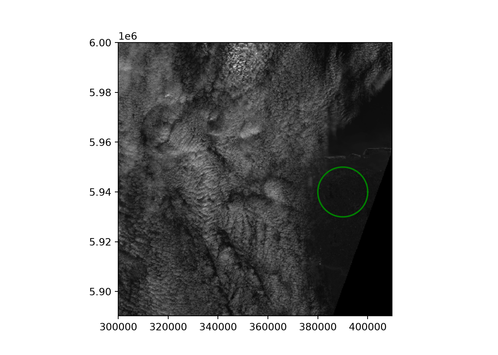
p1, tr1 = read_down(30)
mask1 = geometry_mask([b], out_shape=p1.shape[1:], transform=tr1, invert=True)
a1 = p1[:, mask1].mean(axis=1)
a1
# array([1033.88210141, 1178.31887599, 1465.96915089, 2156.40164936])For the full resolution, this takes a while:
system.time(a2 <- aggregate(p, b, mean))
# user system elapsed
# 41.375 2.163 38.143t0 = time.time()
win = from_bounds(*b.bounds, transform=src.transform).round_offsets().round_lengths()
full = src.read(window=win).astype("float64") # only the part covering the circle
mask2 = geometry_mask([b], out_shape=full.shape[1:],
transform=src.window_transform(win), invert=True)
a2 = full[:, mask2].mean(axis=1)
print("seconds:", round(time.time() - t0, 1))
# seconds: 0.5
a2
# array([1032.88344344, 1177.27030646, 1464.41028633, 2156.25640241])Relative differences: we will work on the array of the stars objects:
(a1[[1]] - a2[[1]])/((a1[[1]]+a2[[1]])/2)
# [,1] [,2] [,3] [,4]
# [1,] 0.001055567 0.0009431265 0.001103254 7.781836e-05(a1 - a2) / ((a1 + a2) / 2)
# array([9.66396959e-04, 8.90282179e-04, 1.06393359e-03, 6.73584340e-05])Alternatively one could convert a1 and a2 to a data.frame, using as.data.frame, and work on the third column of the data frames.
Exercise 9.6
Use hist to compute the histogram on the downsampled S2 image. Also do this for each of the bands. Use ggplot2 to compute a single plot with all four histograms in facets.
# null device
# 1hist(p1)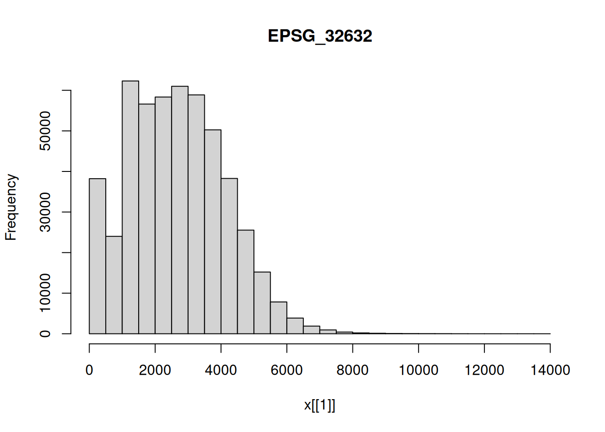
hist(p1[,,,1])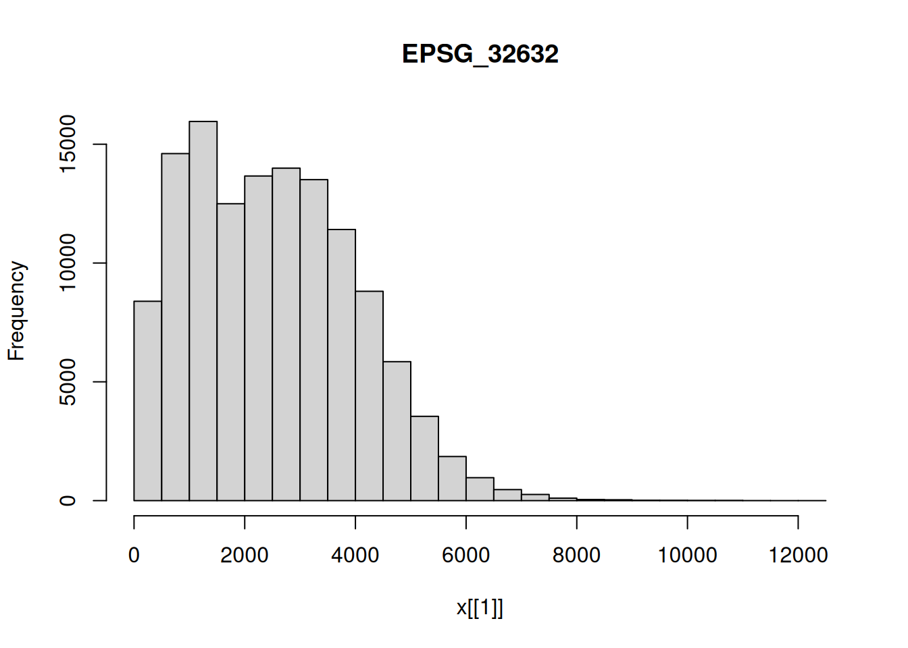
hist(p1[,,,2])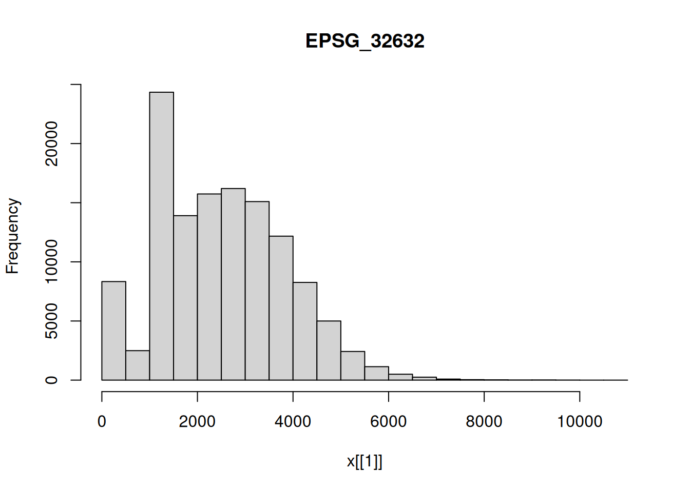
hist(p1[,,,3])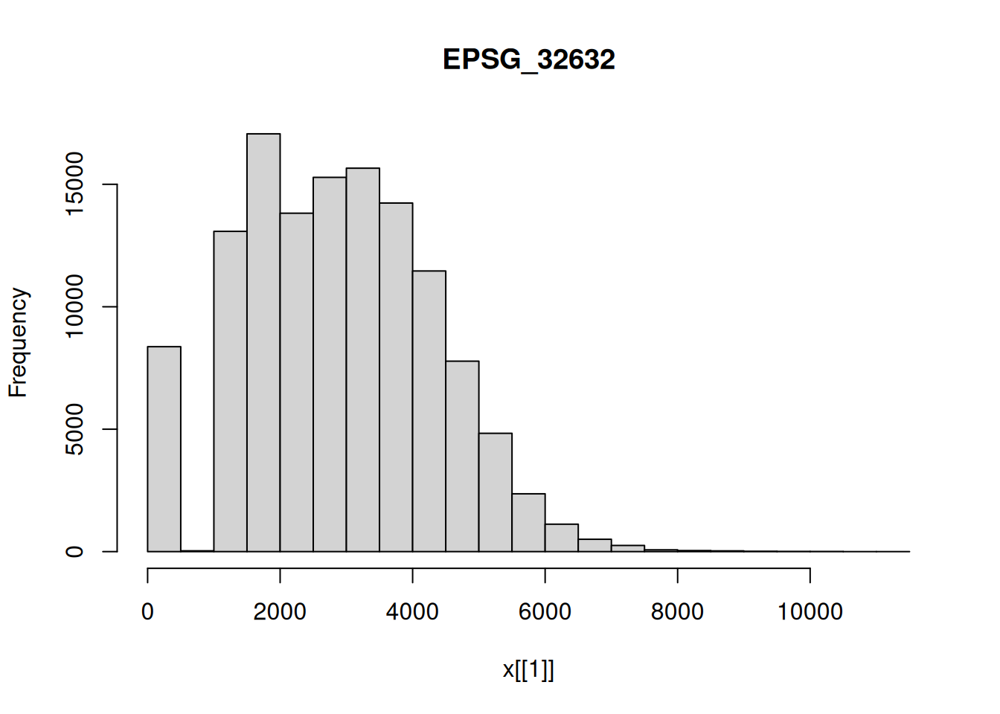
hist(p1[,,,4])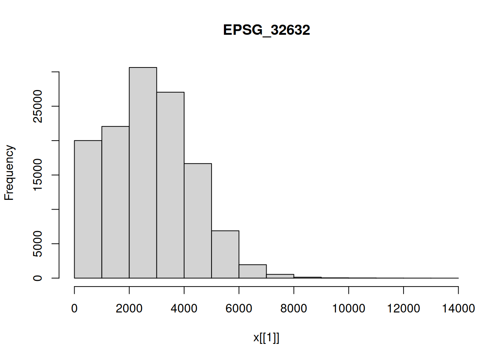
library(ggplot2)
ggplot(as.data.frame(p1), aes(x = EPSG_32632)) +
geom_histogram() + facet_wrap(~band)
# `stat_bin()` using `bins = 30`. Pick better value `binwidth`.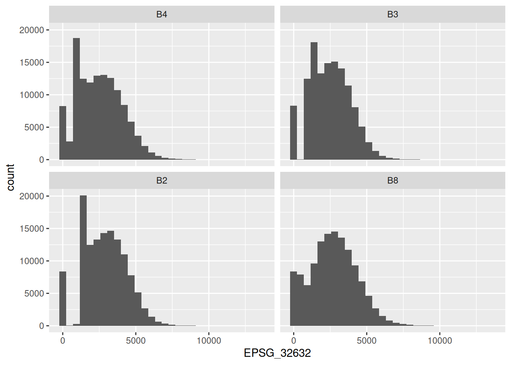
from plotnine import ggplot, aes, geom_histogram, facet_wrap
names = ["B4", "B3", "B2", "B8"]
plt.hist(p1.ravel(), bins=30) # all bands
# (array([3.6883e+04, 1.7578e+04, 5.0100e+04, 5.5678e+04, 5.0639e+04,
# 5.4210e+04, 5.5343e+04, 5.1430e+04, 4.3556e+04, 3.3564e+04,
# 2.3182e+04, 1.4653e+04, 8.1250e+03, 4.3260e+03, 2.2370e+03,
# 1.1950e+03, 6.4000e+02, 3.1900e+02, 1.5600e+02, 9.7000e+01,
# 6.1000e+01, 4.6000e+01, 3.3000e+01, 1.8000e+01, 1.7000e+01,
# 5.0000e+00, 5.0000e+00, 2.0000e+00, 1.0000e+00, 1.0000e+00]), array([ 0. , 451.9, 903.8, 1355.7, 1807.6, 2259.5, 2711.4,
# 3163.3, 3615.2, 4067.1, 4519. , 4970.9, 5422.8, 5874.7,
# 6326.6, 6778.5, 7230.4, 7682.3, 8134.2, 8586.1, 9038. ,
# 9489.9, 9941.8, 10393.7, 10845.6, 11297.5, 11749.4, 12201.3,
# 12653.2, 13105.1, 13557. ]), <BarContainer object of 30 artists>)
plt.show()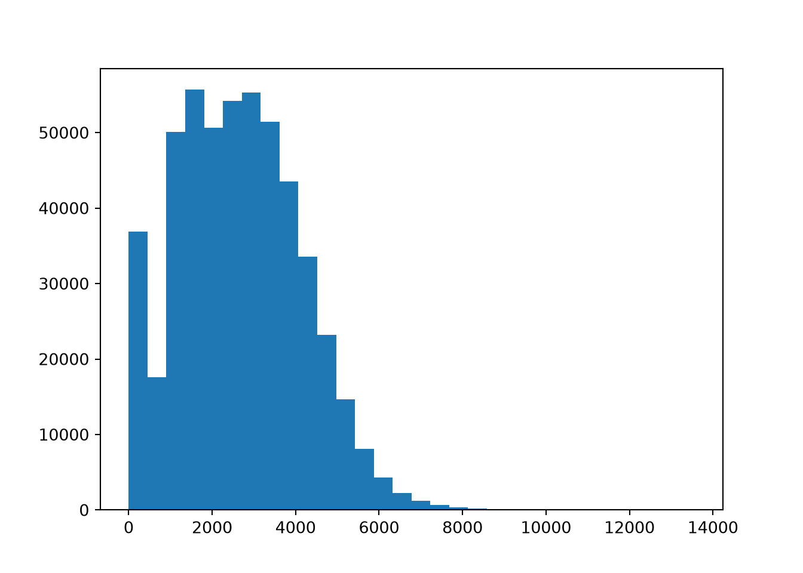
for name, band in zip(names, p1):
plt.hist(band.ravel(), bins=30)
plt.title(name)
plt.show()
# (array([8.2990e+03, 6.2010e+03, 1.7608e+04, 1.0534e+04, 1.0559e+04,
# 1.1341e+04, 1.1643e+04, 1.1463e+04, 1.0223e+04, 8.8510e+03,
# 6.7900e+03, 4.8280e+03, 3.1460e+03, 1.9570e+03, 1.1050e+03,
# 6.3700e+02, 3.5000e+02, 2.1200e+02, 1.0500e+02, 7.3000e+01,
# 2.8000e+01, 2.1000e+01, 1.3000e+01, 9.0000e+00, 1.3000e+01,
# 7.0000e+00, 4.0000e+00, 3.0000e+00, 1.0000e+00, 1.0000e+00]), array([ 0. , 413.36666667, 826.73333333, 1240.1 ,
# 1653.46666667, 2066.83333333, 2480.2 , 2893.56666667,
# 3306.93333333, 3720.3 , 4133.66666667, 4547.03333333,
# 4960.4 , 5373.76666667, 5787.13333333, 6200.5 ,
# 6613.86666667, 7027.23333333, 7440.6 , 7853.96666667,
# 8267.33333333, 8680.7 , 9094.06666667, 9507.43333333,
# 9920.8 , 10334.16666667, 10747.53333333, 11160.9 ,
# 11574.26666667, 11987.63333333, 12401. ]), <BarContainer object of 30 artists>)
# Text(0.5, 1.0, 'B4')
# (array([8.3230e+03, 4.6000e+01, 7.0700e+03, 1.8427e+04, 9.9480e+03,
# 1.0841e+04, 1.1575e+04, 1.1762e+04, 1.1609e+04, 1.0106e+04,
# 8.5210e+03, 6.4590e+03, 4.4820e+03, 2.9430e+03, 1.6760e+03,
# 9.9100e+02, 5.3400e+02, 3.0800e+02, 1.8700e+02, 8.6000e+01,
# 4.2000e+01, 2.8000e+01, 2.2000e+01, 1.1000e+01, 1.1000e+01,
# 8.0000e+00, 4.0000e+00, 3.0000e+00, 1.0000e+00, 1.0000e+00]), array([ 0. , 363.53333333, 727.06666667, 1090.6 ,
# 1454.13333333, 1817.66666667, 2181.2 , 2544.73333333,
# 2908.26666667, 3271.8 , 3635.33333333, 3998.86666667,
# 4362.4 , 4725.93333333, 5089.46666667, 5453. ,
# 5816.53333333, 6180.06666667, 6543.6 , 6907.13333333,
# 7270.66666667, 7634.2 , 7997.73333333, 8361.26666667,
# 8724.8 , 9088.33333333, 9451.86666667, 9815.4 ,
# 10178.93333333, 10542.46666667, 10906. ]), <BarContainer object of 30 artists>)
# Text(0.5, 1.0, 'B3')
# (array([8.3610e+03, 1.8000e+01, 1.2700e+02, 1.3046e+04, 1.3836e+04,
# 9.8610e+03, 1.0958e+04, 1.1528e+04, 1.1751e+04, 1.1330e+04,
# 9.9770e+03, 8.2980e+03, 6.1300e+03, 4.4140e+03, 2.7490e+03,
# 1.6130e+03, 9.1300e+02, 4.8100e+02, 2.8600e+02, 1.7100e+02,
# 6.2000e+01, 3.3000e+01, 3.5000e+01, 1.7000e+01, 1.0000e+01,
# 1.0000e+01, 5.0000e+00, 3.0000e+00, 1.0000e+00, 1.0000e+00]), array([ 0. , 375.43333333, 750.86666667, 1126.3 ,
# 1501.73333333, 1877.16666667, 2252.6 , 2628.03333333,
# 3003.46666667, 3378.9 , 3754.33333333, 4129.76666667,
# 4505.2 , 4880.63333333, 5256.06666667, 5631.5 ,
# 6006.93333333, 6382.36666667, 6757.8 , 7133.23333333,
# 7508.66666667, 7884.1 , 8259.53333333, 8634.96666667,
# 9010.4 , 9385.83333333, 9761.26666667, 10136.7 ,
# 10512.13333333, 10887.56666667, 11263. ]), <BarContainer object of 30 artists>)
# Text(0.5, 1.0, 'B2')
# (array([1.1883e+04, 6.8150e+03, 7.3360e+03, 1.0550e+04, 1.3207e+04,
# 1.3875e+04, 1.4021e+04, 1.2659e+04, 1.0843e+04, 8.5850e+03,
# 6.2670e+03, 4.2590e+03, 2.4960e+03, 1.4300e+03, 7.7500e+02,
# 4.2800e+02, 2.6300e+02, 1.4800e+02, 6.4000e+01, 3.3000e+01,
# 2.5000e+01, 1.9000e+01, 1.4000e+01, 1.0000e+01, 1.0000e+01,
# 2.0000e+00, 5.0000e+00, 1.0000e+00, 1.0000e+00, 1.0000e+00]), array([ 0. , 451.9, 903.8, 1355.7, 1807.6, 2259.5, 2711.4,
# 3163.3, 3615.2, 4067.1, 4519. , 4970.9, 5422.8, 5874.7,
# 6326.6, 6778.5, 7230.4, 7682.3, 8134.2, 8586.1, 9038. ,
# 9489.9, 9941.8, 10393.7, 10845.6, 11297.5, 11749.4, 12201.3,
# 12653.2, 13105.1, 13557. ]), <BarContainer object of 30 artists>)
# Text(0.5, 1.0, 'B8')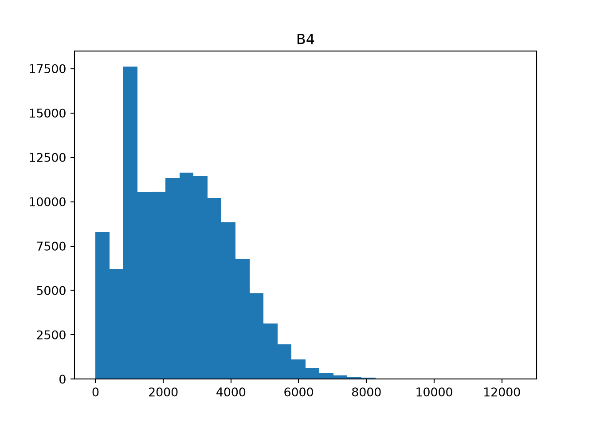
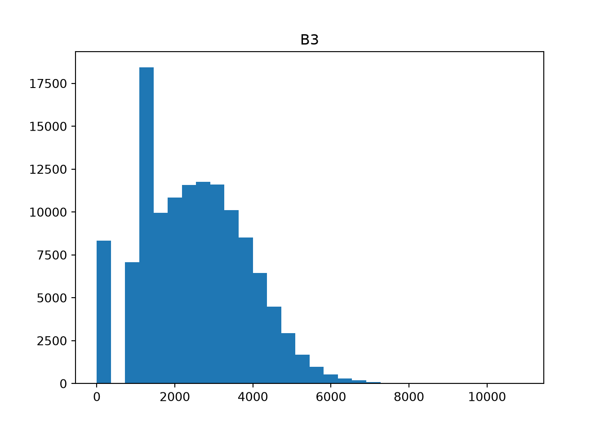
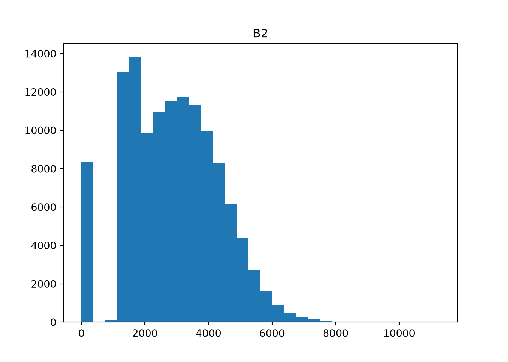
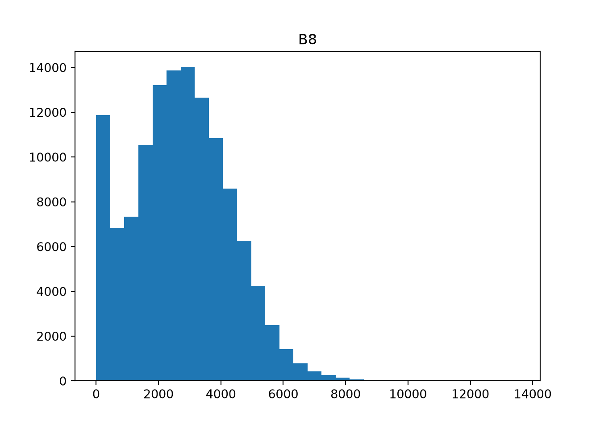
df = pd.DataFrame({"band": np.repeat(names, p1[0].size), "value": p1.ravel()})
(
ggplot(df, aes(x="value"))
+ geom_histogram(bins=30)
+ facet_wrap("band")
).show()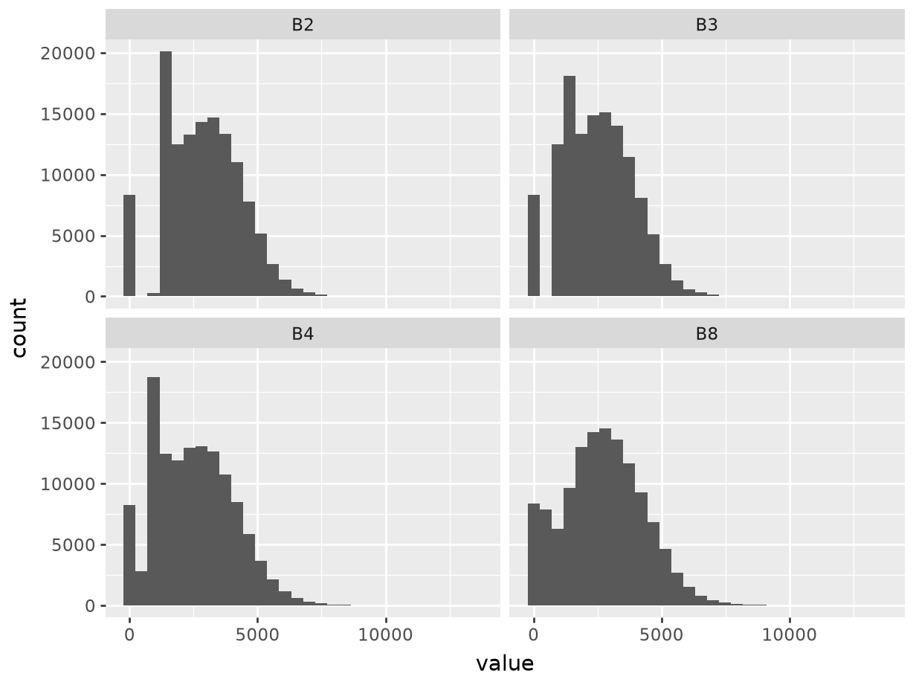
Exercise 9.7
Use st_crop to crop the S2 image to the area covered by the 10 km circle. Plot the results. Explore the effect of setting argument crop = FALSE
# work on the downsampled image, as plot() does
x0, y0 = tr1.c, tr1.f
inside = geometry_mask([b], out_shape=p1.shape[1:], transform=tr1, invert=True)
# crop = TRUE: restrict to the bounding box of the circle, mask the rest
rows, cols = np.where(inside)
r0, r1, c0, c1 = rows.min(), rows.max() + 1, cols.min(), cols.max() + 1
cropped = np.where(inside, p1[0], np.nan)[r0:r1, c0:c1]
ext = (x0 + c0 * tr1.a, x0 + c1 * tr1.a, y0 + r1 * tr1.e, y0 + r0 * tr1.e)
plt.imshow(cropped, extent=ext)
# <matplotlib.image.AxesImage object at 0x7a0c31fa42d0>
plt.show()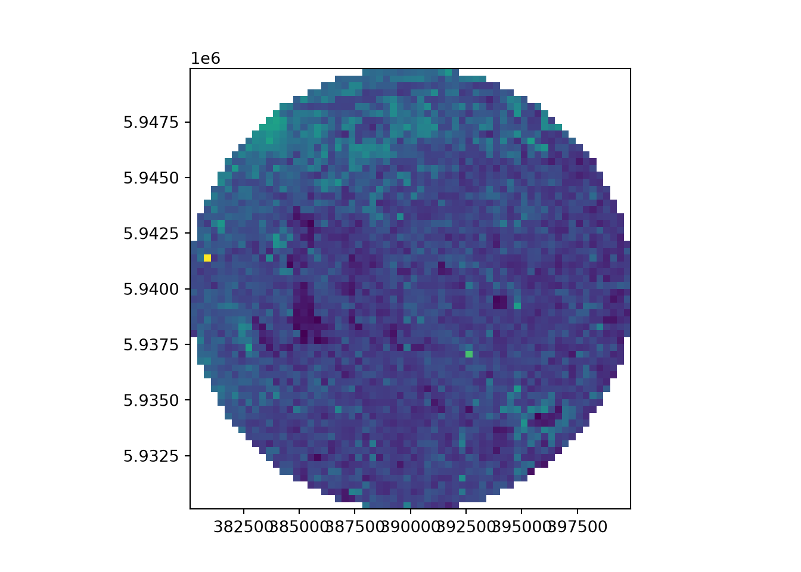
# crop = FALSE: mask the pixels outside the circle, but keep the full extent
plt.imshow(np.where(inside, p1[0], np.nan),
extent=extent)
# <matplotlib.image.AxesImage object at 0x7a0c31e02490>
plt.show()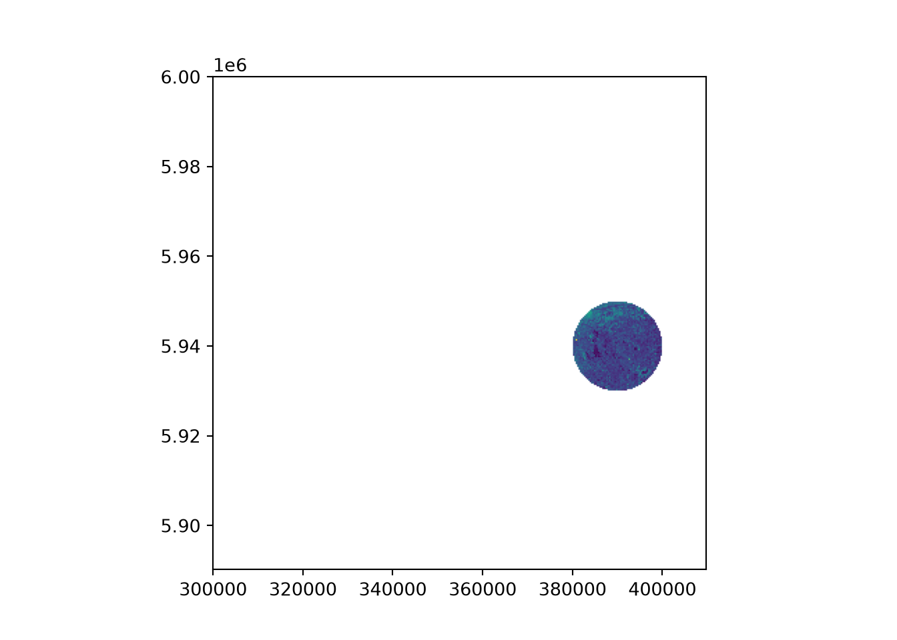
Exercise 9.8
With the downsampled image, compute the logical layer where all four bands have pixel values higher than 1000. Use a raster algebra expression on the four bands (use split first), or use st_apply for this.
p_spl = dict(zip(["B4", "B3", "B2", "B8"], p1)) # one array per band
p_spl["high"] = ((p_spl["B4"] > 1000) & (p_spl["B3"] > 1000) &
(p_spl["B2"] > 1000) & (p_spl["B8"] > 1000))
plt.imshow(p_spl["high"], extent=extent)
# <matplotlib.image.AxesImage object at 0x7a0c31e53750>
plt.show()
alternative, using st_apply on the band dimension